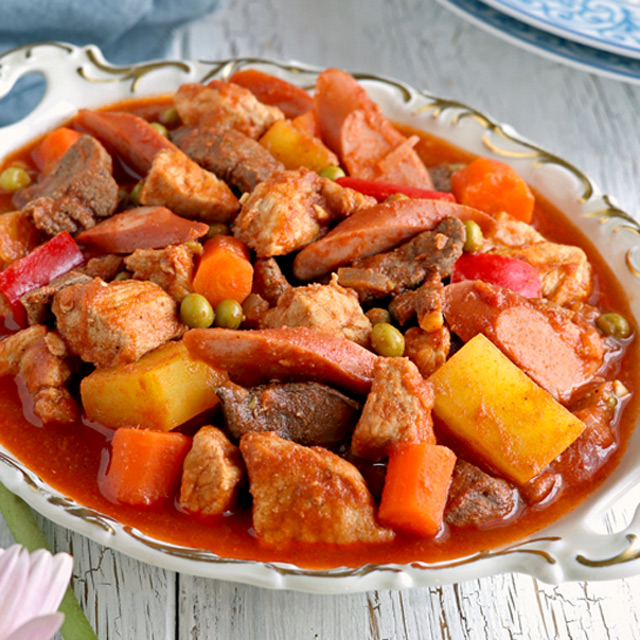

Menudo Recipe

Ingredients:
- 1 lb pork, cubed
- 1/2 lb pork liver, cubed
- 1 small potato, diced
- 1 small carrot, diced
- 1/2 cup green peas
- 1 small red bell pepper, diced
- 3 cloves garlic, minced
- 1 small onion, chopped
- 1 cup tomato sauce
- 1 cup water or broth
- 1 tbsp soy sauce
- 1/2 tsp black pepper
- Salt to taste
- 2 tbsp cooking oil
Instructions:
- Heat oil in a pan and sauté garlic and onion until fragrant.
- Add the pork and cook until lightly browned.
- Pour in soy sauce and tomato sauce. Stir and cook for a few minutes.
- Add water or broth, then bring to a simmer. Cover and cook until the pork is tender.
- Add the pork liver and mix well.
- Stir in the potatoes, carrots, green peas, and red bell pepper. Cook until vegetables are tender.
- Season with salt and black pepper to taste.
- Simmer for a few more minutes until the sauce thickens.
- Serve hot with steamed rice. Enjoy!
Back to Menu